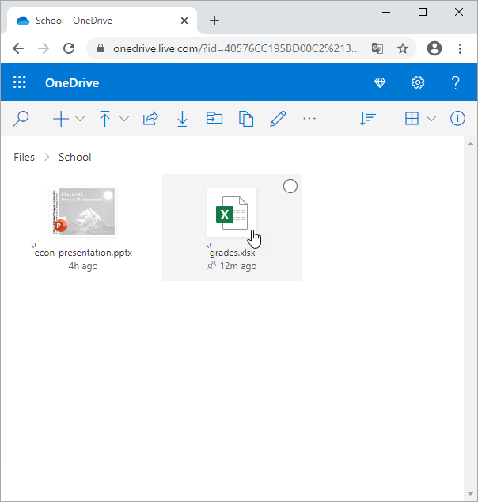
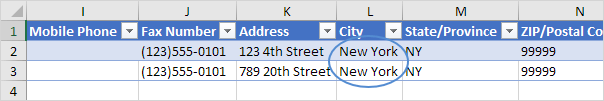

Menanamkan
Sematkan lembar kerja Excel dalam dokumen Word dan bekerja dengan Excel di Word. Anda juga dapat menyematkan file di Excel.
1. Pilih data Excel.
2. Klik kanan, lalu klik Salin (atau tekan Ctrl+C).
3. Buka dokumen Word.
4. Di Word, pada tab Beranda, di grup Clipboard, klik Tempel.
5. Klik Tempel Spesial.
Kotak dialog Tempel Spesial muncul.
6. Klik Tempel, Objek Lembar Kerja Microsoft Excel.
7. Klik Oke.
8. Klik dua kali objek untuk bekerja dengannya. Misalnya, format tabel dan sisipkan fungsi SUM.
Catatan: objek yang disematkan adalah bagian dari file Word. Tidak ada tautan ke file Excel asli. Untuk membuat tautan, pada langkah 6, klik Tempel Tautan, Objek Lembar Kerja Microsoft Excel. Sekarang, jika Anda mengklik dua kali
objek tersebut, Excel membuka file Excel. Untuk menyematkan file di Excel, pada tab Sisipkan, di grup Teks, klik Objek.
PDF
Halaman ini mengajarkan Anda bagaimana untuk mengkonversi sebuah berkas Excel ke PDF berkas.
1. Buka buku kerja.
2. Pada tab File, klik Simpan Sebagai.
3. Klik Telusuri.

4. Pilih PDF dari daftar drop-down.
5. Klik Opsi.
6. Anda dapat menerbitkan pilihan, lembar aktif atau seluruh buku kerja.
7. Klik OK lalu Klik Simpan.
Bagikan Buku Kerja
Sorot Perubahan |
Terima/Tolak Perubahan
Jika Anda berbagi sebuah buku kerja di Excel 2016 atau versi yang lebih tua, Anda dapat bekerja dengan orang lain pada buku kerja yang sama pada waktu yang sama. Buku kerja harus disimpan ke lokasi jaringan di mana orang lain bisa membukanya.
Anda dapat melacak perubahan yang dilakukan orang lain dan menerima atau menolak perubahan tersebut.
Untuk berbagi buku kerja, jalankan langkah-langkah berikut.
1. Buka buku kerja.

2. Pada tab Tinjau, di grup Perubahan, klik Bagikan Buku Kerja.
Kotak dialog Bagikan Buku Kerja muncul.
3. Pada tab Editing, klik kotak centang dan klik OK.
Excel menyimpan buku kerja. Anda sekarang dapat bekerja dengan orang lain di buku kerja yang sama secara bersamaan. Layar di atas menunjukkan kepada Anda siapa yang membuka buku kerja.
Sorot Perubahan
Anda dapat menyorot perubahan di layar yang dibuat pengguna lain.
1. Pada tab Tinjau, di grup Perubahan, klik Lacak Perubahan.

2. Klik Soroti Perubahan.
Kotak dialog Sorot Perubahan muncul.
3. Klik Oke.

Excel menyoroti perubahan di layar.
Rupanya, Aiden telah mengubah Penjualan Smith dari $16.753,00 menjadi $26.753,00.
Terima/Tolak Perubahan
Anda sekarang dapat menerima atau menolak perubahan ini.
1. Pada tab Tinjau, di grup Perubahan, klik Lacak Perubahan.
2. Klik Terima/Tolak Perubahan.
3. Klik Oke.
4. Klik Terima untuk menerima perubahan atau Tolak untuk menolak perubahan.
Catatan: tidak semua fitur tersedia di buku kerja bersama.
OneDrive
Simpan file Excel Anda ke lokasi OneDrive Anda dan akses file Anda dari komputer mana pun atau bagikan dengan orang lain.
1. Buka buku kerja.
2. Pada tab File, klik Simpan Sebagai.
3. Klik OneDrive, Masuk.

Catatan: jika Anda tidak memiliki akun Microsoft, klik Daftar untuk membuat akun. Jika Anda menggunakan Outlook atau Xbox live, Anda sudah memiliki akun Microsoft.
4. Ketik alamat email Anda dan klik Next.
5. Masukkan kata sandi Anda dan klik Masuk.

6. Pilih folder.
7. Klik Simpan.
Anda sekarang dapat mengedit file Excel ini dengan Excel Online dari mana saja tanpa menginstal Excel di komputer Anda. Untuk berbagi file Excel ini dengan orang lain, jalankan langkah-langkah berikut.
8. Buka onedrive.live.com dan masuk dengan akun Microsoft Anda.
9. Klik folder yang dipilih pada langkah 6.
10. Klik kanan file Excel dan klik Bagikan.

11. Masukkan alamat email, tambahkan pesan dan klik Kirim.

Penerima menerima tautan dan dapat mengedit file Excel. Anda sekarang dapat menggunakan Excel Online untuk bekerja dengan penerima di buku kerja ini secara bersamaan.
On line
Anda dapat mengedit file Excel dengan Excel Online dari mana saja tanpa menginstal Excel di komputer Anda.
1. Pertama, simpan file Excel ke lokasi OneDrive Anda.
2. Buka onedrive.live.com dan masuk dengan akun Microsoft Anda.
3. Klik file Excel.

Excel Online membuka buku kerja di browser.
4. Edit file Excel Anda.

Catatan: tidak perlu menyimpan file Anda karena semua perubahan disimpan secara otomatis. Tidak semua fitur tersedia di Excel Online.
Impor Data Akses
Contoh ini mengajarkan Anda cara mengimpor data dari database Microsoft Access. Di Excel, saat Anda mengimpor data, Anda membuat koneksi permanen yang bisa di-refresh.
1. Pada tab Data, dalam grup Dapatkan & Transformasikan Data, klik Dapatkan Data.
2. Klik Dari Database, Dari Database Microsoft Access.

3. Pilih file Akses.
4. Klik Impor.
5. Pilih tabel di sisi kiri jendela Navigator dan klik Load.
Hasil. Catatan database Anda di Excel.
6. Saat data Access Anda berubah, Anda dapat dengan mudah me-refresh data di Excel. Pertama, pilih sel di dalam tabel. Selanjutnya, pada tab Desain, dalam grup Data Tabel Eksternal, klik Refresh.
Permintaan Microsoft
Contoh ini mengajarkan Anda cara mengimpor data dari database Microsoft Access dengan menggunakan Microsoft Query Wizard. Dengan Microsoft Query, Anda bisa memilih kolom data yang Anda inginkan dan hanya mengimpor data tersebut ke Excel.
1. Pada tab Data, dalam grup Dapatkan & Transformasikan Data, klik Dapatkan Data.
2. Klik Dari Sumber Lain, Dari Microsoft Query.
Kotak dialog 'Pilih Sumber Data" muncul.
3. Pilih MS Access Database* dan centang 'Gunakan Panduan Kueri untuk membuat/mengedit kueri'.
4. Klik Oke.
5. Pilih database dan klik OK.
Database Access ini terdiri dari beberapa tabel. Anda dapat memilih tabel dan kolom yang ingin Anda sertakan dalam kueri Anda.
6. Pilih Pelanggan dan klik simbol >.
7. Klik Berikutnya.
Untuk hanya mengimpor kumpulan rekaman tertentu, filter data.
8. Klik Kota dari daftar 'Kolom untuk difilter' dan hanya sertakan baris di mana Kota sama dengan New York.
9. Klik Berikutnya.
Anda dapat mengurutkan data Anda jika Anda mau (kami tidak melakukannya di sini).
10. Klik Berikutnya.
11. Klik Finish untuk mengembalikan data ke Microsoft Excel.
12. Pilih bagaimana Anda ingin melihat data ini, di mana Anda ingin meletakkannya, dan klik OK.
Hasil:

13. Saat data Access Anda berubah, Anda dapat dengan mudah me-refresh data di Excel. Pertama, pilih sel di dalam tabel. Selanjutnya, pada tab Desain, dalam grup Data Tabel Eksternal, klik Refresh.
Impor/Ekspor File Teks
Impor |
Ekspor
Artikel ini menjelaskan cara mengimpor atau mengekspor file teks. File teks dapat dipisahkan koma (.csv ) atau dipisahkan tab (.txt )
Impor
Untuk mengimpor file teks, jalankan langkah-langkah berikut.
1. Pada tab File, klik Buka.
2. Klik Telusuri.
3. Pilih File Teks dari daftar drop-down.

4a. Untuk mengimpor file.csv, pilih File Nilai Dipisahkan Koma Microsoft Excel dan klik Buka. Itu saja.
4b. Untuk mengimpor file.txt, pilih Dokumen Teks dan klik Buka. Excel meluncurkan Panduan Impor Teks.
5. Pilih Dibatasi dan klik Berikutnya.
6. Kosongkan semua kotak centang di bawah Pembatas kecuali kotak centang Tab dan klik Berikutnya.

7. Klik Selesai.

Hasil:

Ekspor
Untuk mengekspor file teks, jalankan langkah-langkah berikut.
1. Buka file Excel.
2. Pada tab File, klik Simpan Sebagai.
3. Klik Telusuri.
4. Pilih Teks (Tab delimited) atau CSV (Comma delimited) dari daftar drop-down.
5. Klik Simpan.
Hasil. File.csv (dipisahkan koma) atau file.txt (dipisahkan tab).


XML
Anda dapat mengonversi file Excel menjadi file data XML, atau sebaliknya. Ini memungkinkan Anda untuk bertukar data antara aplikasi yang berbeda. Pertama, aktifkan tab Pengembang.
Berikut data yang ingin kami konversi ke file data XML.

Pertama, kita akan membuat skema berdasarkan data sumber XML. Skema mendefinisikan struktur file XML. Kita harus melakukan ini di luar Excel.
1. Misalnya, buka Notepad dan tambahkan baris berikut.
<?xml version="1.0" encoding="UTF-8" standalone="yes"?>
<data-set xmlns:xsi="http://www.w3.org/2001/XMLSchema-instance">
<record >
<LastName>Smith</LastName>
<Sales>16753</Sales>
<Country>UK</Country>
<Quarter>Qtr 3</Quarter>
</record>
<record>
<LastName>Johnson</LastName>
< Penjualan>14808</Penjualan>
<Country>USA</Country>
<Quarter>Qtr 4</Quarter>
</record>
</data-set>
Catatan: tag merujuk ke nama kolom, tetapi Anda dapat memberi mereka nama apa pun yang Anda inginkan! Misalnya, alih-alih Nama Belakang gunakan Nama.
2. Simpan file sebagai schema.xml.
3. Buka data-set.xlsx.
4. Pada tab Pengembang, dalam grup XML, klik Sumber untuk membuka panel tugas Sumber XML.
5. Untuk menambahkan peta XML, klik Peta XML.
Kotak dialog Peta XML muncul.
6. Klik Tambah.

7. Pilih schema.xml dan klik OK dua kali.
8. Sekarang cukup seret (petakan) 4 elemen dari pohon ke lembar kerja (baris 1).

9. Pada tab Pengembang, di grup XML, klik Ekspor.
10. Simpan file Anda sebagai data-set.xml dan tekan Enter.
Hasil:
Itu menghemat banyak waktu!
Catatan: untuk mengimpor file XML, buka buku kerja kosong, pada tab Pengembang, dalam grup XML, klik Impor, lalu pilih file XML.